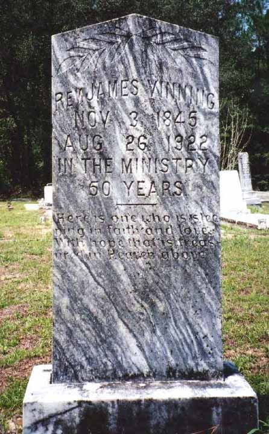
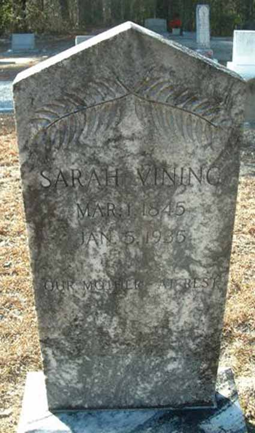
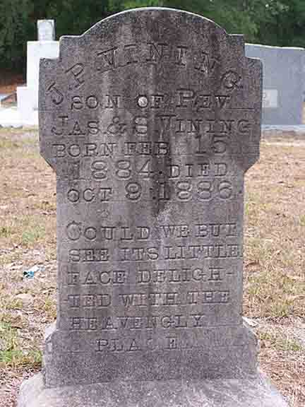
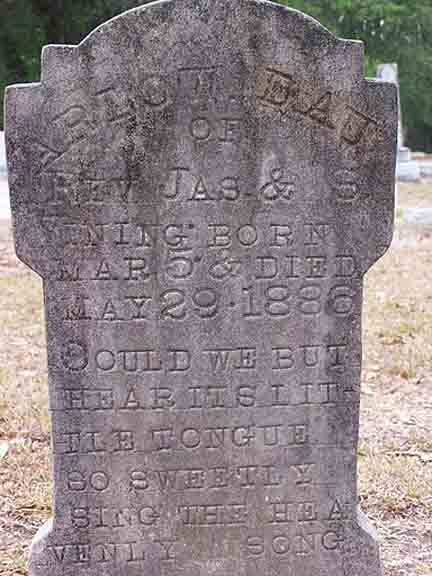

Census Data
| 1870 | 1880 | 1890 | 1900 | 1910 | 1920 | 1930 | 1940 | |
| James Vining | 25 | 34 | ? | 54 | 64 | 74 | dead | |
| Sarah (Brooker) Vining | 25 | 35 | ? | 55 | 65 | 74 | ? | dead |
| William Lee Vining | 3 | 13 | ? | married [and living in separate household?] | ||||
| George W. Vining | 1 | 11 | ? | [living? in separate household] | ||||
| Mary Jane Vining | 9 | ? | [living? in separate household] | |||||
| Sara Ellen Vining | 7 | married [and living in separate household?] | ||||||
| Anna Laura Vining | 5 | ? | [living? in separate household] | |||||
| James O. Vining | 3 | ? | [living? in separate household] | |||||
| Carrie Vining | ? | married [and living in separate household?] | ||||||
| Christian Eva Vining | ? | 18 | 28 [see note below] |
living in separate household | ||||
| Joel P. Vining | dead | |||||||
| Arlow Vining | dead |


Death Data
Gravestones of James Vining and Sarah (Brooker) Vining, in Mount Zion Baptist Church Cemetery, Axson, Atkinson County, Georgia:


